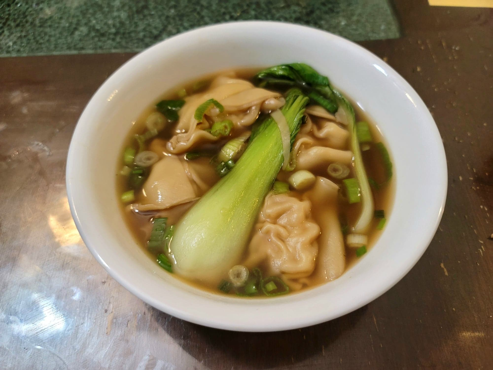

Wonton Soup

Ingredients:
Wonton Filling:
- 1/2 lb Ground pork
- 1/2 lb Shrimp, chopped
- 2 Scallions, chopped
- 1 tbsp Ginger, grated
- 1 tbsp Light soy sauce
- 2 tbsp Shaoxing wine
- 1/2 tsp Salt
- 2 tbsp Sesame oil
Wonton Soup:
- 50-60 Wonton wrappers
- 8 cups Chicken broth
- 4 cloves Garlic, smashed
- 1 inch Ginger, thinly sliced
- 3 tbsp Light soy sauce
- 3 tbsp Shaoxing wine
- 4 tsp Sugar
- 1 tsp Sesame oil
- 1/2 cup Water, cold
- Bok Choy
- Optional: Dried egg noodles
- Scallions, finely chopped
Instructions:
- Combine all of the filling ingredients except for the shrimp into a food processor. Pulse into mostly smooth. Then add in the shrimp and pulse until the shrimp is finely chopped but not completely a paste.
- Lay some wonton wrappers onto a flat workspace. Place 1-2 tsp of filling onto the center of each wonton wrapper and wrap according to preffered wonton wrapping method. Repeat in batches until filling is finished. Place into a covered container to prevent from drying out before ready to use.
- Place the broth, garlic, ginger, light soy sauce, wine, sugar, and sesame oil into a large pot over high heat and stir to combine. Bring to a boil and then reduce to medium heat. Stir the pot to make a whirlpool effect and add in the wontons while stirring. Cook until it comes back to a simmer and the wontons begin to float. Then add in 1/2 cup cold water, the bok choy, and optionally the egg noodles. Let it come to a simmer again and once the noodles are cooked to preference, remove from heat. Stir in the scallions and serve hot.